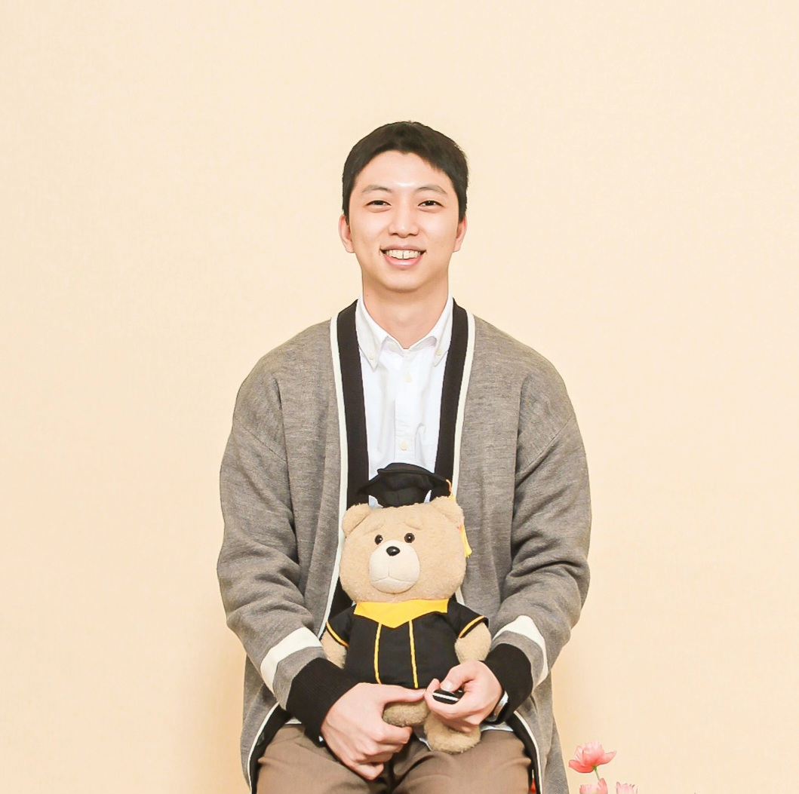

Ph.D. Candidate, School of Electrical Engineering, KAIST
I am a Ph.D. candidate in Electrical Engineering at KAIST, conducting research on information theory, machine learning, and robust learning with a focus on data efficiency and self-distillation. Recently, I have been particularly interested in the performance gains of large language models (LLMs), especially in the context of weak-to-strong generalization.
Email: hsjeong1121<at>kaist.ac.kr